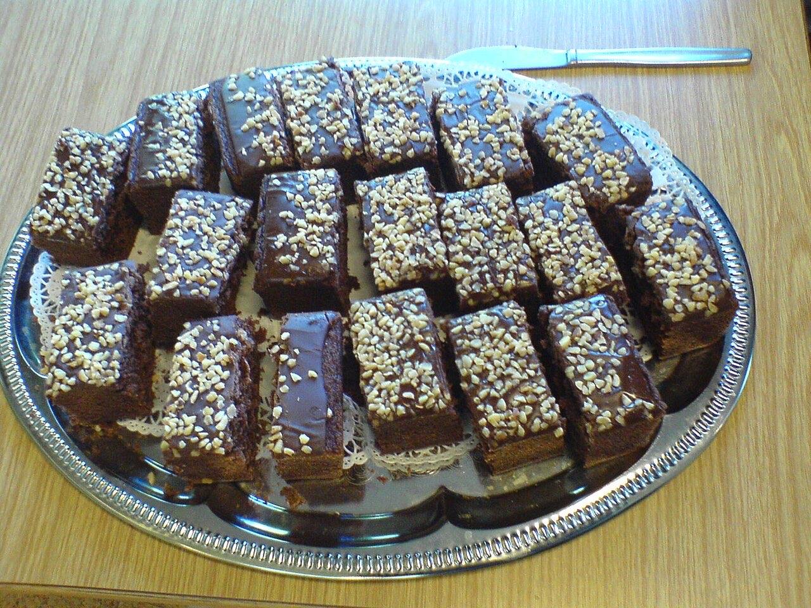

Fotografias ilustrativas — no site final usamos as vossas.
Cozinha tradicional portuguesa · Brito
Buffet à beira da EN206, em Brito
Vários pratos para escolher ao seu ritmo.
N.º 1, em Brito, junto à estrada.
Ligue ou escreva por WhatsApp antes de vir.
A Casa Dalí (Dali Buffet) fica na EN206, em Brito, e serve cozinha portuguesa em formato de buffet. Escolha à vontade, no seu ritmo.

Fotografias ilustrativas — no site final usamos as vossas.
Pedido de reserva
Escolha o dia e a hora — o pedido chega por WhatsApp e confirmamos logo.
↑ Assim chegaria a mensagem ao vosso WhatsApp. (Nesta demonstração nada é enviado.)
Onde estamos
Proposta para Casa Dalí (Dali Buffet)
Esta página foi feita de propósito para Casa Dalí (Dali Buffet) por João Machado, programador web aqui de Guimarães. Inclui:
Eu trato do alojamento e da manutenção. Sem compromisso.